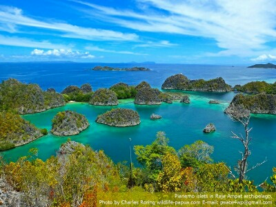

As a tourist guide, I often organize tours for visitors who want to see the beauty of Raja Ampat, both its above the water landscape/ seascape, and its underwater marine life. The duration of the tour can be as short as 3 days/ 2 nights to 7 days/ 6 nights or even more with such activities as snorkeling, island hopping, as well as hiking, birding and wildlife watching tour.
Typical Itinerary
The following trip plan should be considered as reference only. It can be modified according to the needs of the visitors.
Day 1. Arriving in Sorong city, transfer by ferry to Waigeo island and then by car to guesthouse. You could enjoy swimming and snorkeling at the beach in front of the guesthouse. Make sure that you do not step on the corals that are very fragile. There are are a lot of fish and marine animals in the coral reef including butterflyfish, parrotfish, moorish idol, anemonefish, wrasse, and a lot more.
Marine Life in Waigeo island of Raja Ampat
If you are interested in birdwatching, you could enjoy birding around the guesthouse.
Day 2. Birding in the south of Waigeo. There are a lot of species of birds that live in the forest and coastal area of Waigeo island such as Sulphur-crested Cockatoo, Pinon Imperial Pigeon, Palm Cockatoo, Eclectus Parrot, Great-billed Parrot, Red-cheeked Parrot, Pied Imperial Pigeon, Pinon Imperial Pigeon, Yellow-faced Myna, Sacred Kingfisher, Beach Kingfisher, Dusky Scrubfowl, Eastern Osprey, Brahminy Kite, and White-bellied Sea Eagle, Radjah Shelduck, and etc. To enhance birding experience, we will provide a spotting scope but we encourage every visitor to bring at least a good pair of 10×42 binoculars.
locally called Kakaktua Raja meaning King Cockatoo (Probosciger aterrimus)
Day 3. Sightseeing, snorkeling or birding tour to karst islets in Kabui bay. There are hundreds of small islets and karst rocks inside Kabui bay. There are also white sandy beaches where you could visit to enjoy swimming, snorkeling and even birdwatching.
Day 4. Sightseeing, snorkeling to Sand bank, Kri, Mansuar island and Gam island. We will visit these place by motorized boat
Day 5. Trip to Piaynemo and Arborek
Pianemo Karst Islands in Raja Ampat
Day 6. Transfer to Sorong harbor by ferry and then to airport/ hotel by car
Device that you need to bring
For snorkeling, visitors need to bring their own mask, snorkel, and swimfins. A good underwater camera such as Gopro or Nikon W300 is also recommended. Every birdwatcher usually brings a pair of binoculars and a bridge camera with telephoto lens such as Nikon P1000 or Canon SX60HS, Sony Cybershot RX10 IV to take pictures of birds. Wildlife photographers, in general bring a D-SLR camera with telephoto lens such as Sigma 150-600 mm sport.
Sightseeing and Snorkeling
Raja Ampat is famous for its beautiful islands and marine life. So, it is natural if visitors go there to enjoy sightseeing and snorkeling tour. There are a lot of snorkeling sites. Some of them include: Yenbuba strait, some karst islets in Kabui bay, Friwen Wall, Five Rocks, Western areas of Mansuar island, Arborek, and Gam island. Usually, I choose a beach resort which functions as a base during the tours. For instance, Raja Ampat Paradise Resort at Warduwer beach of Waigeo island. Every morning, snorkeling and sightseeing tour can be organized from the resort to islands or beaches that I mention above.
Birding
For rainforest birding tour in Raja Ampat, Waigeo is a very good destination. It is a big island with a lot of birdlife. Visitors who go birding in Waigeo will get the chance to watch Willie Wagtail, Mimic Meliphaga, Puff-backed Meliphaga, Sacred Kingfisher, Collared Kingfisher, Beach Kingfisher, Radjah Shelduck, Palm Cockatoo, Eclectus Parrot, Sulphur-crested Cockatoo, Red-cheeked Parrot, Yellow-faced Myna, White-bellied Sea Eagle, Brahminy Kite, Eastern Osprey, Pink-spotted Fruit Dove, Pied Imperial Pigeon, Pinon Imperial Pigeon, Red Bird of Paradise, and Wilson's Bird of Paradise, Torresian Crow, and a lot more.
Cost
For customized trips and costs, please, contact us by email to: peace4wp@gmail.com or by whatsapp to +6281332245180.